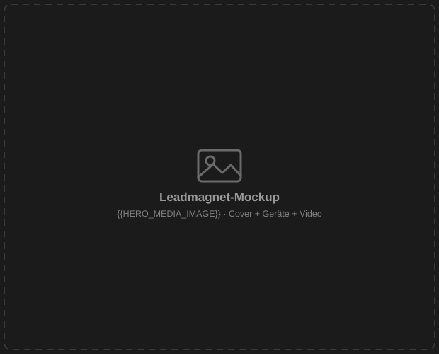

– Live-Webinar · 02.09.2026 · 19:00 Uhr · 100 % kostenlos –
Keine Zeit für Urlaub, weil ohne dich nichts läuft? Bring Klarheit in dein Onboarding – ohne monatelanges Projekt
Live-Demo: Zwei Experten zeigen dir in Echtzeit, wie KI dir heute schon Arbeit abnimmt – nicht irgendwann, sondern sofort einsetzbar. Inklusive fertiger Vorlagen zum Mitnehmen.
- Claude vs. ChatGPT live – Du siehst direkt, welches Tool für welche Aufgabe im Onboarding wirklich taugt – und sparst dir das ewige Rumprobieren.
- Prompts, die liefern – Du erlebst live, wie aus schwammigen Anweisungen klare, sofort nutzbare Ergebnisse werden – mit Vorlagen für morgen.
- Onboarding als System – Neue Mitarbeiter wissen von Tag 1 an, was zu tun ist – und du kommst raus aus der Ich-erkläre-alles-selbst-Schleife.